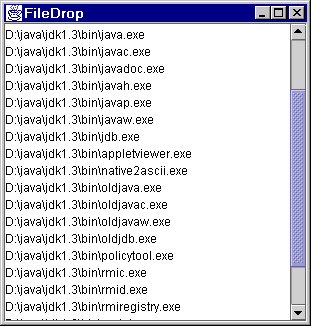
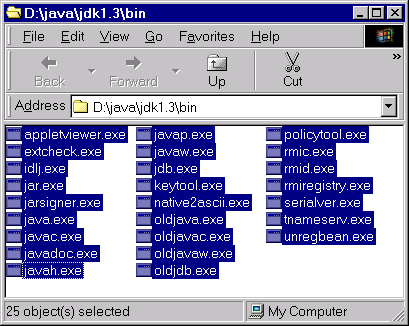

|  | <== ...drag... |  |
Have SourceForge notify you of new releases
Now supports Linux KDE/Gnome thanks to Nathan Blomquist.
This class makes it easy to drag and drop files from the operating system to a Java program. Any java.awt.Component can be dropped onto, but only javax.swing.JComponents will indicate the drop event with a changed border.
To use this class, construct a new FileDrop by passing it the target component and a Listener to receive notification when file(s) have been dropped. Here is an example:
Note that some operating systems and Java virtual machine combinations do not support file dragging and dropping. If you are on one of these systems, you're kind of out of luck. I'm sory.
JPanel myPanel = new JPanel();
new FileDrop( myPanel, new FileDrop.Listener()
{ public void filesDropped( java.io.File[] files )
{
// handle file drop
...
} // end filesDropped
}); // end FileDrop.Listener
You can specify the border that will appear when files are being dragged by calling the constructor with a javax.swing.border.Border. Only JComponents will show any indication with a border.
You can turn on some debugging features by passing a PrintStream object (such as System.out) into the full constructor. A null value will result in no extra debugging information being output.
Running the Example
The FileDrop class has a built-in demo that can be run in any of the following ways:
- Double-click the filedrop.jar file.
- At a command prompt, enter java -jar filedrop.jar.
- With filedrop.jar in the classpath enter java Example.
Also Note
I've condensed all the functionality into one FileDrop.java class to make it easier to copy the single file into your projects. Since this is Public Domain, there's no need to include yet another jar file in your project and reference a license -- just add FileDrop.java to your package and you're off!
One more thing: since this is Public Domain, feel free to change the Java package name if it makes your life a little easier.
A Note About Public Domain
I have released this software into the Public Domain. That means you can do whatever you want with it. Really. You don't have to match it up with any other open source license &em; just use it. You can rename the files, move the Java packages, whatever you want. If your lawyers say you have to have a license, contact me, and I'll make a special release to you under whatever reasonable license you desire: MIT, BSD, GPL, whatever.